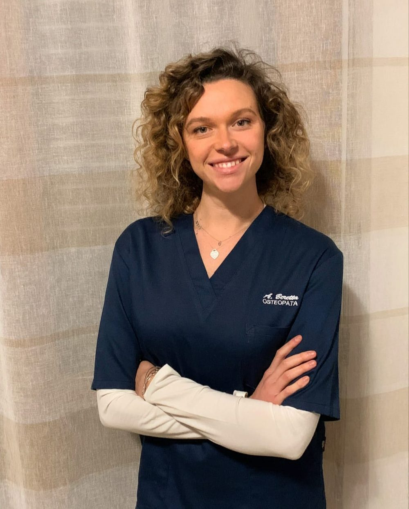
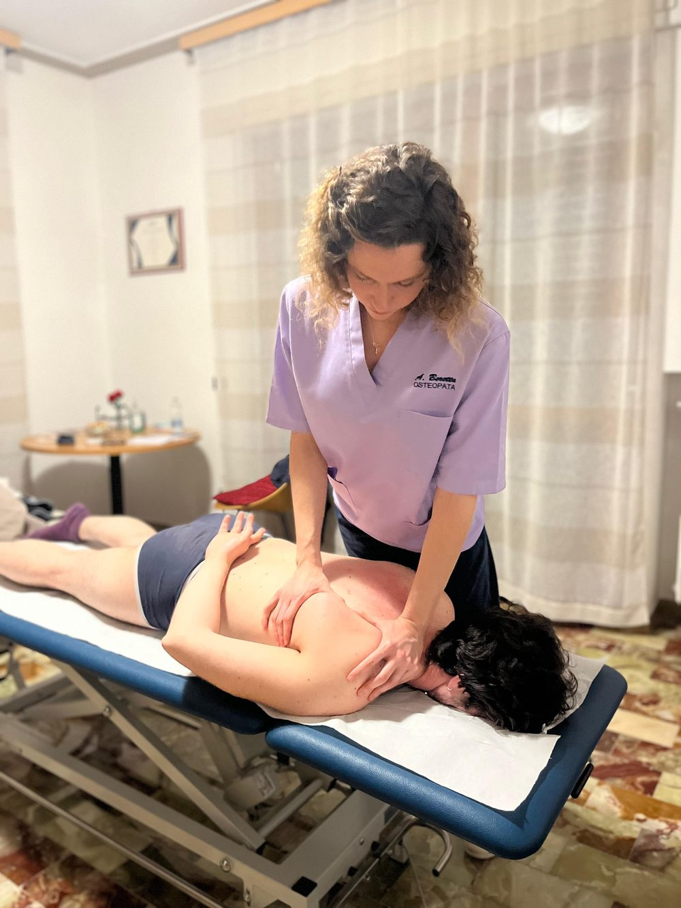

Bambini e donne in gravidanza
Seguo le future mamme durante la gestazione e il post-parto, oltre a trattare neonati e bambini con tecniche dolci e mirate.
OsteopataMisinto & Vercelli
Sono la Dott.ssa Alessandra Beretta. Mi occupo di aiutare le persone a ritrovare il proprio equilibrio fisico attraverso tecniche manuali e un ascolto attento delle necessità di ogni paziente.
Ricevo su appuntamento a Misinto (MB) e a Vercelli.

L'osteopatia per me è prima di tutto un modo per aiutare le persone a stare meglio. Il mio obiettivo è capire l'origine del fastidio e lavorare insieme per risolverlo nel modo più efficace possibile.
Il mio percorso di studi si è svolto presso l'Accademia Italiana Medicina Osteopatica (AIMO), dove ho conseguito il Master of Science in Osteopathic Medicine rilasciato dallo University College of Osteopathy (UCO) di Londra. Grazie a questa collaborazione tra le due scuole, ho potuto integrare la pratica clinica italiana con gli standard formativi inglesi.
Oltre all'attività in studio, collaboro con l'AIMO occupandomi di orientamento e Open Day, un impegno che mi permette di presentare la professione ai futuri studenti e restare legata al mondo della formazione.

Seguo le future mamme durante la gestazione e il post-parto, oltre a trattare neonati e bambini con tecniche dolci e mirate.
Supporto gli sportivi nel recupero da infortuni e nella gestione di tensioni muscolari legate all'attività fisica.
Lavoro sul recupero della mobilità dei tessuti dopo interventi chirurgici, aiutando a ridurre la rigidità delle cicatrici.
Per offrire un supporto sempre più completo, integro l'osteopatia con tecniche specialistiche apprese attraverso corsi di aggiornamento costante.
Rimango sempre in formazione continua per garantire il miglior approccio terapeutico.
Specializzazione nel trattamento del paziente anziano (over 65), con focus su tecniche manuali sicure e gestione del dolore.
Utilizzo della Cupping Therapy per favorire il rilascio dei tessuti e migliorare la circolazione locale.
Applicazione di bende elastiche per supportare la funzione muscolare e ridurre l'infiammazione.
Supporto integrato ostetrico-osteopatico all'allattamento al seno per il benessere di mamma e neonato.
Spesso in studio mi vengono fatte domande curiose. Ecco alcune risposte rapide per capire meglio come funziona l'osteopatia.
No, i nervi non possono farlo. Spesso quella sensazione è dovuta a una contrattura muscolare o a una rigidità dei tessuti che preme leggermente, creando fastidio.
Dipende. Solitamente il freddo si usa subito dopo un trauma (come una botta), mentre il caldo aiuta a rilassare i muscoli quando la tensione è presente da tempo.
L'osteopatia è una medicina manuale che guarda alla persona nella sua totalità. L'osteopata non si ferma al sintomo, ma cerca di individuare la causa del dolore attraverso tecniche manuali (manipolazioni, mobilizzazioni, tecniche viscerali) per ripristinare la corretta mobilità e l'equilibrio del corpo.
Per prenotare una visita o richiedere informazioni, puoi chiamarmi o scrivermi su WhatsApp.
Via Marco Lissoni 46
20826 Misinto (MB)
Ricevo nel mio studio principale a Misinto, in un ambiente tranquillo e dedicato alla cura del paziente.
Studio Professionale
Vercelli (VC)
Sono presente anche a Vercelli per offrire assistenza ai pazienti della zona.